2.1 Leçon
2.1.1 La représentation de données spatiales
Les phénomènes spatiaux sont généralement perçus comme étant soit des entités discrètes avec des frontières bien définies ou encore comme des phénomènes continus qu’on observe de partout mais qui ne possèdent pas de frontières naturelles1. Une rivière, une route, un pays, ou une ville sont tous des exemples d’entités spatiales discrètes (2.1a). D’autre part, l’élévation, la température ou la qualité de l’air sont des exemples de phénomènes continus, appelés aussi des champs spatiaux (2.1b).
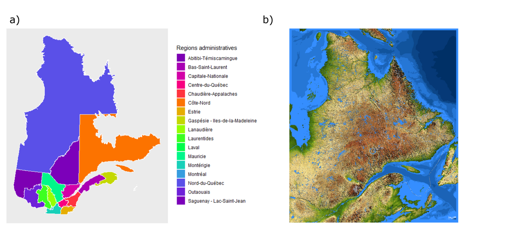
Figure 2.1: Exemples de données vectorielles et matricielles : a) La carte délimitant les régions administratives du Québec est formée à partir de données vectorielles; b) La carte topographique du Québec (source : https://mern.gouv.qc.ca/repertoire-geographique/carte-relief-quebec/))
Les entités spatiales (ou objets) sont habituellement représentés par ce qu’on appelle des données vectorielles (« vector data », en anglais), alors que les phénomènes continues sont habituellement représentés par des données matricielles (« raster data », en anglais). Ces deux modèles sont des façons bien différentes de percevoir et de représenter les phénomènes spatiaux. Nous les décrivons dans les deux sous-sections suivantes.
2.1.1.1 Les données vectorielles
Définition
Les données vectorielles sont utilisées pour représenter des entités spatiales dont les frontières sont explicites et qui possède une localisation précise et unique. Les données vectorielles sont définies par leur localisation géographique, leur géométrie, et un ou plusieurs attributs.
La localisation géographique désigne l’emplacement de l’entité selon un système de coordonnées géographiques ou un système de coordonnées projetées. Un système de coordonnées géographiques utilise un système en trois dimensions pour donner la position (x,y,z) ou longitude et latitude d’une entité spatiale sur la surface sphérique de la Terre. Un système de coordonnées projetées, donne la position d’une entité spatiale sur une surface plane à deux dimensions. Nous reviendrons sur les systèmes de coordonnées de référence à la section 2.1.3.
La géométrie d’une entité spatiale correspond à sa forme (« shape », en anglais). Il existe trois principaux types de géométrie, aussi appelées des classes : les points, les lignes, et les polygones (Tableau 2.2). Ces classes peuvent être combinées pour créer des géométries plus complexes; des multipoints, des multilignes, des multipolygones, etc.
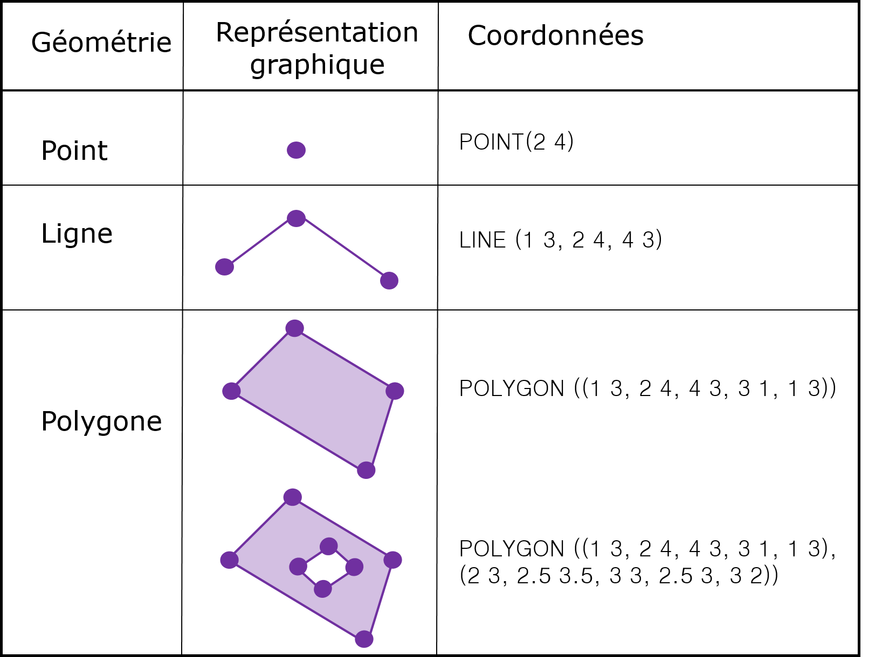
Figure 2.2: Exemple de données vectorielles de géométrie simple. Remarquez que dans le cas d’un polygone, la première et la dernière coordonnées sont les mêmes. Tableau inspiré de Wikipedia (https://en.wikipedia.org/wiki/Well-known_text_representation_of_geometry)
Les données vectorielles comprennent également des variables additionnelles appelées des attributs. Les attributs sont toutes informations permettant de décrire une entité spatiale autres que sa localisation et sa géométrie.
Géométrie et topologie
Les points sont les données vectorielles les plus simples. Par exemple, un point pourrait représenter l’emplacement d’un restaurant dans une ville. Les attributs associés à ce point pourraient inclure les heures d’ouverture, sa spécialité culinaire, l’échelle de prix de son menu ou d’autres informations.
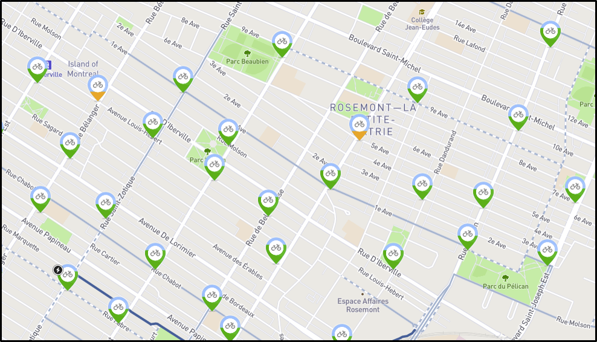
Figure 2.3: L’emplacement des stations de vélo en libre partage, Bixi, dans un quartier de Montréal correspond à une géométrie multipoints. Source : https://secure.bixi.com/map/
Il est aussi possible de combiner plusieurs points ensemble dans une structure multipoints définie par un attribut unique (Figure 2.3). Par exemple, l’ensemble des restaurants de cuisine vietnamienne dans une ville pourrait être considéré comme une géométrie unique.
La géométrie des lignes est plus complexe. Le terme ligne en analyse spatiale n’a pas la même définition que dans le langage usuel. Une ligne désigne un ensemble d’une seule ou de plusieurs polylignes (Figure 2.4). Une polyligne, quant à elle, désigne une séquence de segments de droite reliés entre eux. Ainsi, en analyse spatiale, une seule ligne pourrait représenter le fleuve Saint-Laurent et l’ensemble de ces affluents (rivière des Outaouais, rivière Saint-Maurice, le Fjord du Saguenay, etc.). D’autre part, il serait aussi possible de définir plusieurs lignes – une pour chaque affluent, par exemple.
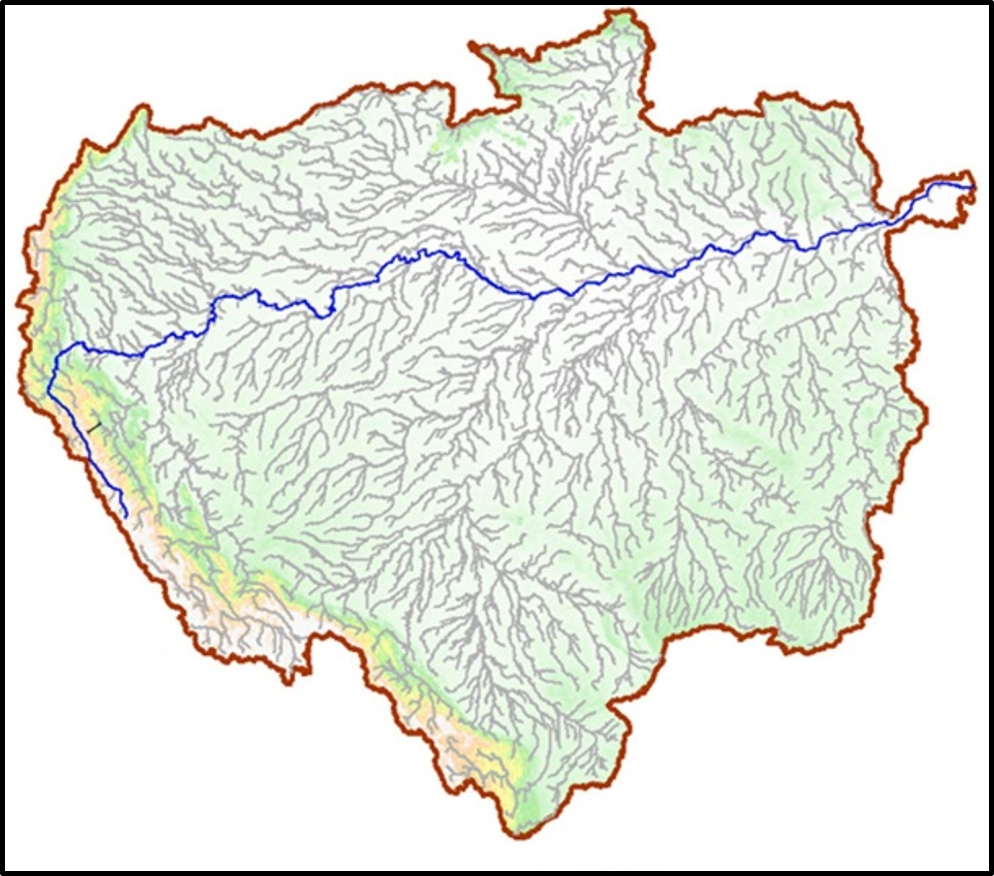
Figure 2.4: Le réseau hydrologique du bassin de l’Amazone représente un exemple d’un ensemble de polylignes. Source : Wang et al. 2020.
Une ligne est représentée par un ensemble ordonné de coordonnées. Les segments de droite peuvent être calculés ou dessinés sur une carte en connectant ensemble les points. Ainsi, la représentation d’une ligne est semblable à celle d’une structure multipoints. La différence notable est que l’ordre des points est important dans la représentation d’une ligne car il est nécessaire de savoir quels points sont connectés entre eux.
Un réseau – par exemple un réseau routier ou un réseau hydrographique – est une ligne de géométrie particulière comprenant des informations additionnelles comme le débit, la connectivité ou la distance.
Un polygone désigne un ensemble de polylignes fermées. La géométrie d’un polygone est très semblable à celle des lignes à l’exception que la dernière paire de coordonnées doit coïncider avec la première paire afin de « fermer » le polygone.
Une particularité des polygones est qu’ils peuvent comprendre des trous. C’est-à-dire qu’un polygone peut être entièrement compris à l’intérieur d’un polygone de plus grande superficie. Ceci est le cas d’une île au sein d’un lac, par exemple. Le polygone formant un îlot permet d’éliminer une partie du polygone qui l’englobe. De plus, alors que l’auto-intersection est permise pour une ligne (c’est-à-dire qu’elle peut se croiser sur elle-même), cette propriété n’est pas valide pour un polygone.
Finalement, plusieurs polygones peuvent être considérés comme formant une géométrie unique ((Figure 2.5)). Par exemple, l’Indonésie est constituée de plusieurs îles. Chaque île peut être représentée par son propre polygone, ou encore l’ensemble des îles peut être représenté par un seul polygone (ou multi-polygones) désignant le pays en entier.
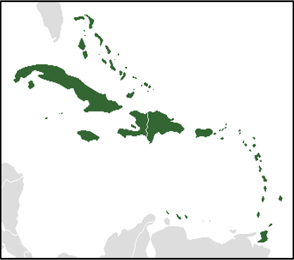
Figure 2.5: Les Antilles peuvent être représentées par plusieurs polygones distincts pour chaque île, ou par un seul multipolygone. Source : https://fr.wikipedia.org/wiki/Antilles
Le modèle vectoriel est très efficace pour représenter la topologie. La topologie est une description des relations spatiales qu’ont les entités spatiales entre elles. Par exemple, une analyse de données vectorielles permettra de déterminer précisément si une entité spatiale est adjacente à une autre, si elle y est incluse, ou si elle s’intersecte (Figure 2.6).
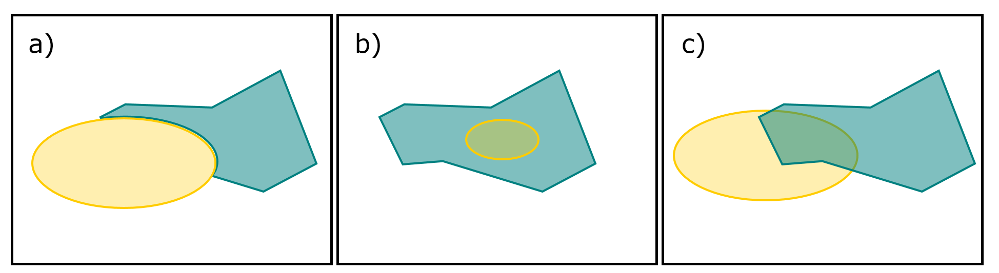
Figure 2.6: Exemples de relations spatiales entre deux entités spatiales : a) adjacence, b) inclusion, et c) intersection.
Format de données vectorielles
Les données vectorielles peuvent être stockées dans une grande variété de formats différents. Ces formats ont évolué et continuent d’évoluer en fonction des besoins et des avancées technologiques. Plusieurs formats ont été développés pour être utilisés avec des logiciels commerciaux mais peuvent être lus et parfois édités par d’autres logiciels.
Peu importe leur format, les données vectorielles sont toujours organisées selon une base de données relationnelle. Un identifiant désigne chaque objet spatial et l’associe à une géométrie et à un ou plusieurs attributs (Tableau 2.7).
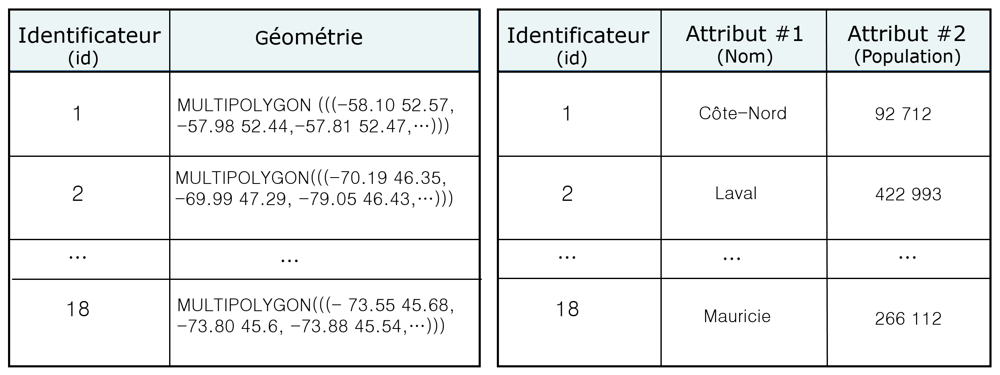
Figure 2.7: Exemple d’une base de données relationnelle pour la carte des régions administratives du Québec (Figure ref(fig:vectomat)a). Chaque objet vectoriel dans la carte correspond à une ligne dans la base de données où figurent les attributs qui lui sont associés
Voici une liste non-exhaustive de formats de données vectorielles.
SHAPEFILE (.SHP, .DBF, .PRJ, .SHX)
Le shapefile est un format propriétaire d’ESRI créé pour les logiciels ArcView et ArcGIS. En français, on le nomme aussi un fichier de forme. À ce jour, il est le format le plus couramment utilisé pour les données vectorielles. Il est devenu un standard tant pour les plateformes commerciales qu’opensource.
Un shapefile comprend entre quatre types de fichiers qui contiennent des informations différentes et toutes essentielles à sa représentation.
- .shp : contient les données spatiales
- .dbf : contient les données d’attributs
- .prj : contient l’information sur la projection des données
- .shx : fichier d’index
Le fichier d’index sert à lier entre elles les informations contenues dans les autres fichiers. Il existe parfois d’autres types de fichier d’index (.sbx, .sbn). Pour visualiser un shapefile, il est nécessaire d’avoir tous les fichiers associés (et pas seulement le fichier .shp). Le fichier .prj peut être absent. En son absence, le shapefile peut être lu mais les données ne seront pas projetées adéquatement. Nous reviendrons sur le concept de projection plus tard dans ce module.
GEODATABASE (.GDB)
La géodatabase est le nouveau format propriétaire d’ESRI conçu pour ArcGIS. Il est de plus en plus adopté car il présente de nombreux avantages par rapport au shapefile. Une géodatabase est une façon de rassembler et d’organiser des données propres à un sujet ou à un projet dans une unique base de données. Elle peut contenir des données géographiques dans une large gamme de fichiers et de formats (Figure 2.8).
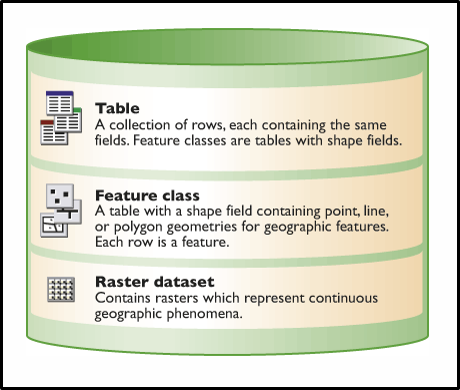
Figure 2.8: Illustration d’une géodatabase telle que représentée sur le site web d’ArcGIS. Image récupérée à : https://desktop.arcgis.com/fr/arcmap/10.3/manage-data/geodatabases/a-quick-tour-of-the-geodatabase.htm
Par exemple, un projet sur le réseau de transport d’électricité au Québec pourrait nécessiter l’utilisation de plusieurs shapefiles (position des centrales, position des pylônes, parcours des câbles, etc.) et aussi plusieurs données matricielles (topographie, végétation, etc.). Ainsi, il s’avère beaucoup plus efficace d’avoir l’ensemble de ces données au sein d’une même base.
De plus, une géodatabase peut être utilisée par de multiples utilisateurs, ce qui est fort utile pour assurer le partage efficace, la mise à jour, et la cohérence des données géographiques au sein de grandes organisations, comme des entreprises ou des ministères.
Malheureusement, bien que les géodatabases peuvent être lues avec R, elles peuvent seulement être modifiées dans ArcGIS.
GEOGRAPHIC JAVASCRIPT OBJECT NOTATION (.GEOJSON, .JSON)
Le format geoJSON est un format standard ouvert très utilisé en cartographie web. geoJSON est une extension du format JSON pour les données géographiques. Un fichier geoJSON contient les coordonnées des données géospatiales ainsi que d’autres informations sur les attributs. Un seul fichier est nécessaire pour stocker l’ensemble de l’information.
GOOGLE KEYHOLE MARKUP LANGUAGE (.KML, .KMZ)
Ce format est basé sur le langage XML et est optimisé pour les navigateurs de cartographie web comme Google Maps et Google Earth. KMZ est une version compressée d’un fichier KML (KML-Zipped).
COVERAGE
COVERAGE est le format propriétaire d’ESRI, développé pour le logiciel ArcInfo, qui a précédé le format shapefile. C’est une autre façon de stockée les données vectorielles qui nécessite plusieurs fichiers. Bien que ce format ne soit plus utilisé lorsque de nouvelles données vectorielles sont conçues, vous pourriez être amenés à rencontrer ce format si vous devez travailler avec des données qui précédent 1990.
ARCINFO INTERCHANGE FILE (.EOO)
C’est le format utilisé pour importer ou exporter des données d’ArcInfo. Il fonctionne comme un fichier zip et permet de partager facilement en un seul fichier les multiples fichiers et dossiers associés au format Coverage. Il permet aussi de transférer des données matricielles de format GRID.
MAPINFO INTERCHANGE FILE (.MID, .MIF)
C’est le format propriétaire de MapInfo, le compétiteur d’Esri. Le format shapefile a supplanté le format interchange qui est de moins en moins utilisé. Le fichier MIF contient la localisation géographique et la topologie, et le fichier MID contient les attributs.
WEB MAP SERVICE (WMS)
N’est pas un format de données mais plutôt un protocole de communication qui permet de visualiser des données spatiales qui sont logées sur un serveur. Les organisations gouvernementales ont souvent recours à cette méthode de partage de l’information spatiale car elle permet de s’assurer que les données diffusées sont toujours à jour. L’utilisateur peut jouer avec les paramètres de visualisation mais ne peut pas importer et modifier les données. Notez que ce protocole est utilisé à la fois pour les données vectorielles et les données matricielles.
2.1.1.2 Les données matricielles
Définition
Les données matricielles représentent la surface terrestre par une grille régulière, communément appelé un raster, formée de rectangles de même forme et de même dimension appelés cellules ou pixels (Figure 2.9). À chaque cellule de la matrice est associée une valeur numérique (ou une valeur manquante) associée à un attribut d’intérêt. On appelle couche (« layer » en anglais) l’information recueillie dans la matrice.
La valeur d’une cellule peut être continue (p. ex. l’élévation - voir Figure 2.1b) ou catégorique (p. ex. le zonage attribué à différents secteurs d’une ville tel que résidentiel, commercial ou industriel). Normalement, la valeur d’une cellule représente la valeur moyenne (ou la valeur prédominante) pour la superficie qu’elle couvre. Cependant, les valeurs sont parfois estimées pour le centre de la cellule.
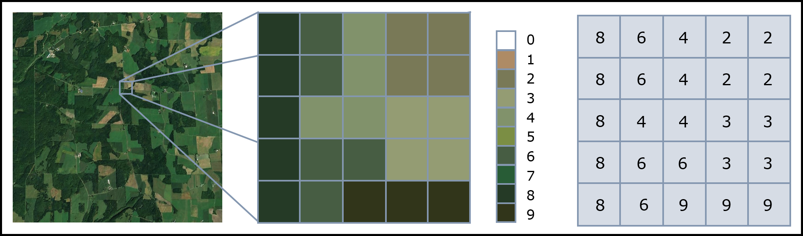
Figure 2.9: Exemple de données matricielles associées à des classes de végétation obtenues à partir d’une image satellitaire. Figure inspirée de NEON neonscience.org/resources/series/introduction-working-raster-data-r
On peut utiliser une base de données relationnelle pour lier la valeur d’un pixel à l’attribut qu’il décrit (Figure 2.10). Contrairement aux données vectorielles où les polygones peuvent être associés à plusieurs attributs, une couche de données matricielles peut représenter un seul attribut.
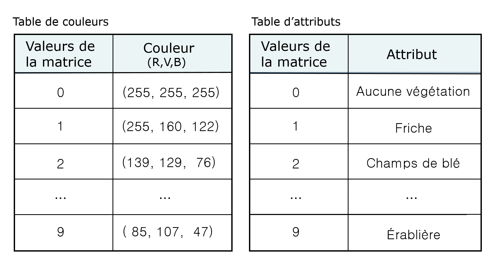
Figure 2.10: Exemple de table relationnelle pour les données vectorielles de la Figure ref(fig:raster). Une valeur numérique est associée à chaque couleur de l’image ainsi qu’à un attribut, ici le type de végétation
Dans leur format le plus simple, les données matricielles prennent la forme d’une image digitale. Cependant, pour associer les données matricielles à une location particulière sur la surface de la Terre, des informations spatiales doivent être ajoutées. Ainsi, un fichier de données matricielles géospatiales débute toujours par une section, appelée le «header» en anglais, qui procure la localisation.
La localisation pour des données matricielles est définie par l’étendue spatiale (« extent » en anglais) couverte par la matrice, la dimension des cellules, le nombre de rangées et de colonnes qui divisent la superficie (respectivement « rows » et « columns » en anglais), et le système de coordonnées géographiques ou projetées. La dimension des cellules correspond à la résolution spatiale et peut être calculée à partir de l’étendue et du nombre de rangées et de colonnes.
Résolution et géométrie
La résolution définie la précision avec laquelle nous pouvons discerner les objets dans l’espace. Une grande résolution correspond à une matrice de données dont les cellules ont une petite taille (Figure 2.11). En conséquence, une telle matrice est plus lente à visualiser et à manipuler, et requière un fichier plus volumineux. En contrepartie, une couche de données matricielles de faible résolution possède des cellules de plus grande taille, se visualise et se manipule plus rapidement, et est contenue dans un fichier moins volumineux.
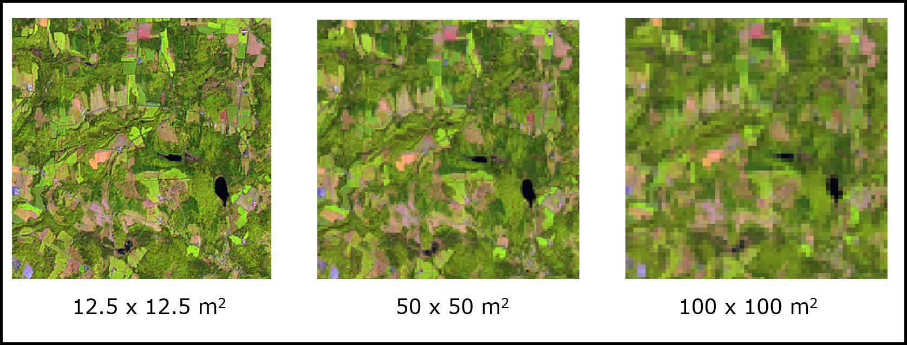
Figure 2.11: Exemple du concept de résolution: plus la résolution est grande, plus la taille des cellules est petite. Dans cette figure, la résolution diminue de droite à gauche, et la taille des cellules augmente. Source de données: https://mern.gouv.qc.ca/nos-publications/spatiocarte-quebec/
Contrairement aux données vectorielles, la géométrie des données matricielles n’est pas définie explicitement par un ensemble de coordonnées. La géométrie peut être déduite en observant les démarcations se produisant aux limites des ensembles de cellules de même valeur. Cependant ces démarcations ne correspondent pas nécessairement aux frontières des entités sur le terrain (Figure 2.12).
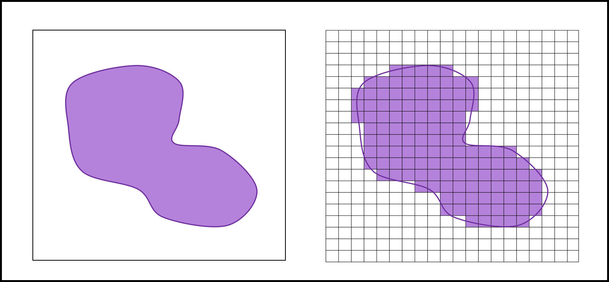
Figure 2.12: La géométrie des objets spatiaux matriciels. Les frontières d’une entité spatiale définie avec des données matricielles (droite) ne correspondent pas nécessairement aux frontières réelles (gauche)
Ainsi, lorsque nous représentons des objets spatiaux aux frontières bien définies, l’utilisation de données vectorielles plutôt que matricielles s’avère plus précise et plus efficace.
Par ailleurs, la représentation de phénomènes continus avec des données vectorielles, nécessiterait de définir un grand nombre de petit polygones et d’enregistrer les coordonnées de chacun d’eux. Dans la majorité des cas, une telle représentation augmenterait dramatiquement le temps de traitement des données.
Données matricielles à bande unique et multi-bandes
Un raster peut contenir une couche ou plusieurs couches de données. Par exemple, un fichier de données matricielles d’élévation comprendra une seule couche de données, soit l’élévation à chaque cellule. Par exemple la carte topographique du Québec (Figure 2.1b) est un exemple de raster à une seule couche.
Un raster à une seule couche peut aussi représenter des images en noir et blanc en utilisant un codage binaire pour exprimer différentes teintes de gris. Un codage sur 1 bit exprimera 21 (2) teintes de gris [0,1], un codage sur 4 bit exprimera 24 (16) teintes de gris [0,1,2,…,15], et un codage sur 16 bits exprimera 216 (65536) teintes de gris [0,1,2,…, 65535] (Figure 2.13).
Figure 2.13: Exemple de codage binaire pour les raster à une couche: Images en blanc et noir utilisant différentes teintes de gris : 2 teintes (gauche), 8 teintes (centre) et 256 teintes (droite).
D’autres rasters peuvent contenir plusieurs couches, appelées aussi des bandes (ou canaux). Par exemple, les images de couleurs contiennent souvent trois bandes: une bande de rouge, une bande de vert et une bande de bleu. C’est ce qu’on nomme le format RGB (pour « red », « green », et « blue »). Ces bandes font références à des sections du spectre électromagnétique captées lors de la prise de l’image (Figure 2.14).
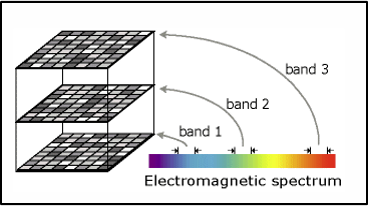
Figure 2.14: Raster multibande. Les bandes blues, vertes et rouges correspondent à des sections du spectre électromagnétique. Image récupérée à https://desktop.arcgis.com/en/arcmap/10.3/manage-data/raster-and-images/raster-bands.htm.
En combinant ces bandes, on peut recréer l’image (Figure 2.15). Attention : chaque bande doit posséder les mêmes informations spatiales pour être superposée aux autres.
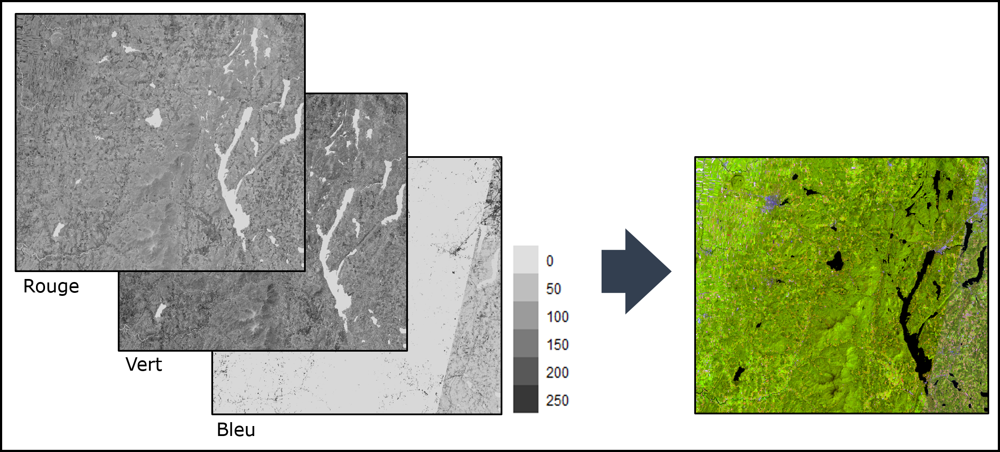
Figure 2.15: Image satellitaire de région de l’Estrie. Le raster multi-bande contient une bande de rouge, une bande de vert et une bande de bleu. L’image couleur s’obtient en combinant les trois bandes. Source de données: https://mern.gouv.qc.ca/nos-publications/spatiocarte-quebec/
Format des données matricielles
Tout comme les données vectorielles, les données matricielles peuvent être stockées dans une grande variété de formats différents. Les images possèdent des structures matricielles, ainsi les formats bien connus pour la transmission d’images sur le Web, .jpg (Joint Photographic Experts Group), .gif (Graphics Interchange Format), et .png (Portable Network Graphics), sont des exemples de format de données matricielles.
Voici une liste non-exhaustive de formats de données matricielles.
GRID (.GRD)
GRID est le format propriétaire d’ESRI pour stocker des données matricielles.
TIFF AND GEOTIFF (.TIF)
Le Tag Image File format (TIFF) est utilisé pour le stockage d’images numériques. Il a la particularité d’être comme un contenant dans lequel plusieurs informations additionnelles sur les données peuvent être stockées (par ex. les attributs, et autres métadonnées). Le format GeoTIFF est un fichier .tif standard dans lequel on intègre des informations additionnelles sur la localisation spatiale des données (p. ex. la résolution, l’étendue ou le système de coordonnées géographiques).
COMMA SEPERATED VALUE FORTMAT (.CSV)
Le format .csv contient du texte séparé par des virgules, et correspond à une façon simple et très répandue de représenter des données matricielles. Par exemple, un fichier .csv pourrait être constitué de trois colonnes : la première pour la coordonnée x de la cellule, la deuxième pour sa coordonnée y, et la troisième pour la valeur de l’attribut.
Une autre façon d’utiliser le format .csv est d’y stocker la matrice de données sous forme d’un tableau de dimension égale à cette dernière. Chaque entrée du tableau donne la valeur d’attribut pour la cellule correspondante. Les informations sur la localisation spatiale doivent alors être fournies en en-tête du fichier.
BITMAP (.BMP)
BITMAP est le format d’images utilisé dans les applications de Microsoft Windows.
De plus, comme expliqué plus haut, la géodatabase et Web Map Service sont aussi utilisés pour les données matricielles.
Peu importe le type de données spatiales et le format utilisé pour les stocker, les données spatiales sont souvent accompagnées de métadonnées. Les métadonnées sont les données sur les données. C’est-à-dire qu’elles viennent donner des informations supplémentaires pour faciliter la compréhension et l’utilisation des données spatiales (p. ex. l’origine des données, l’auteur.e, les détails sur la structure, le lexique, les abréviations, la légende, etc.). Idéalement, tout ensemble de données devrait être accompagné de métadonnées.
2.1.2 Les systèmes de coordonnées de référence
- Coordonnées angulaires, projections, notations.
Repris de l’introduction aux données spatiales du site Spatial Data Science.↩